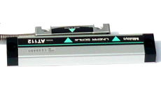
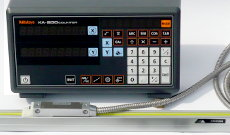
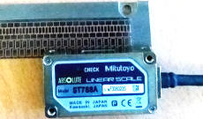
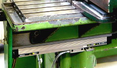

Lineární pravítka a sytémy digitálního odměřování
Sortimentem lineárních pravítek přináší firma Mitutoyo na trh komponent produkty vyráběné na základě tradiční kvality a dlouholetých know-how.
Lineární odměřovací pravítka jsou univerzální prvky široce využitelná v oblasti přesného strojírenství, stavby strojů, měřících systémů a automatizace. Uvedená pravítka se vyrábí stejnou technologií jako pravítka použitá při stavbě standardních vysoce přesných Mitutoyo měřících strojů a zařízení.
Lineární pravítka
Lineární odměřovací systémy jsou optické nebo indukční snímače s pevnou částí a snímací hlavou schopné vysoce přesného měření délek a odvozeně též rychlosti pohybu.
Číst více »
DRO systémy
DRO systémy představují komplet tvořený alespoň jedním lineárním pravítkem (=snímač polohy) a ovládací jednotkou s displejem pro zobrazení snímané polohy.
Číst více »
Odměřování pro NC stroje
Na rozdíl od DRO systémů jsou NC pravítka zapojena přímo do systému pohonu stroje, kde obvykle tvoří základní zpětnovazební prvek. Jejich přesnost a spolehlivost tak přímo ovlivňuje funkčnost celého pohonu.
Číst více »
Dodatečná digitalizace
Dovybavení starších obráběcích strojů číslicovým odměřovacím systémem vede k jednoznačnému nárůstu produktivity, kvality a uživatelského komfortu při realizaci výrobních operací.
Číst více »